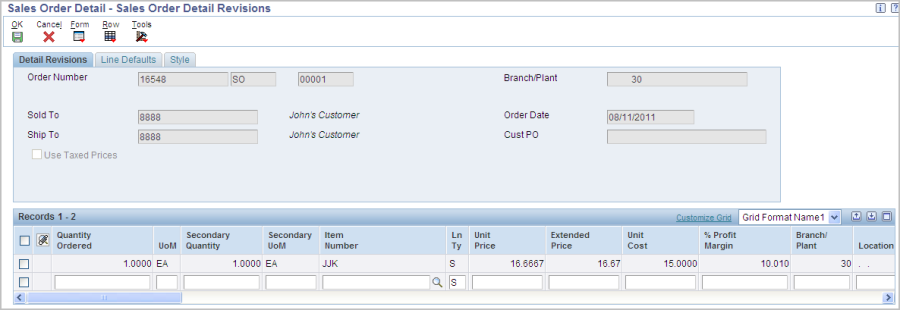

ScopeDetailsOverviewThe Gross Profit Margin functionality allows users to define minimum and maximum gross profit margin targets using Advanced Preferences. The preference provides flexibility when defining gross profit margin targets since they can be defined at different levels like the Item or Item Group level, Customer or Customer Group level, etc. This Advanced Preference works with the Gross Profit (Basis Code 9) Advanced Price Adjustments and allows users additional flexibility in setting gross profit margins on the fly when entering sales orders via Sales Order Entry. If the profit margin percentage entered on a sales detail line falls outside of the defined lower and upper limits, a warning will be issued in Sales Order Entry P4210. Gross Profit Margin Advanced Preference SetupAdvanced Preference Definition (P4071)On menu G40311, go into Advance Preference Name Revisions, click Add, and input the preference definition information. Advanced Preference Type 19 (Gross Profit Margin Target) needs to be specified. The user has the option of specifying an item or customer group as well as making it a quantity or non-quantity based preference. Advanced Preference Detail (P4072)On menu G40311, go into Advance Preferences Detail Revisions, input the preference name defined above, and click Add. Then input the preference info: Advanced Preference Schedule (P4070)Add the advanced preference to a preference schedule: Price Adjustment Detail (P4072)Basis code 9 indicates that the sales order detail line’s gross profit margin will be resolved to 10 percent. Sales Order Entry (P4210)Additional processing options have been added to Sales Order Entry (P4210) for Gross Profit Margin.
Gross Profit Margin Target Preference ExampleSales Order Entry (P4210)Enter a Sales order using an item that has a base price and cost assigned. Let the cost, price and profit margin default in: Note: The 10% profit margin came from the Advanced Price Adjustment defined earlier.  Price History (P4074)Here is Price History showing the Gross Profit Margin adjustment: Sales Order Entry (P4210)Go back into the order detail and change the gross profit percentage to 1% and notice the warning is issued from the Advanced Preference. The warning is issued because the 1% gross profit margin percent falls below the 5% lower limit defined in the Gross Profit Margin Target preference and under the preference detail revisions setup. The same warning would have been issued if the percent entered exceeded the 25 percent upper limit defined on the preference. Line Margin HoldIn addition to receiving profit margin warning messages, if you want orders to go on line margin hold, you will need to setup a the Order Hold Constants (P42090) with Code Type L (Line Level) hold following the instructions in Margin Holds. ConclusionIn Summary, the Gross Profit Margin Target Advanced Preference allows users greater flexibility by allowing upper and lower profit margin limits. This functionality, utilized by Sales Order Entry, will allow greater control over profit margins which can have a positive impact on financial profitability when implemented. Users are notified of any order detail lines that fall outside of the profit margin targets which will produce greater control and flexibility in the order taking process.
|